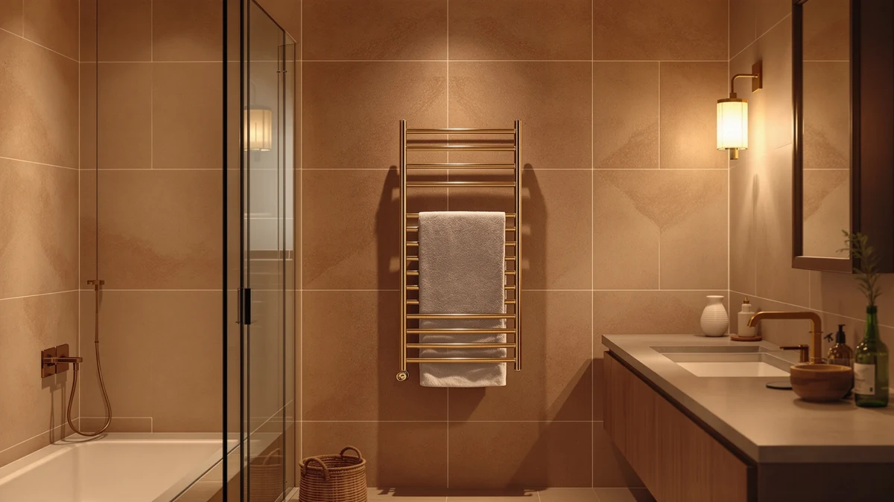

Quick Answer
In this guangjuyuan towel warmers review, the GUANGJUYUAN Towel Warmers for Bathroom Wall is a hardwired stainless steel build priced at $139.99. The Live Fine, R FLORY and VEVOR models below are worth comparing if a plug-in rack, a larger freestanding cabinet, or a different brand at a similar price matters more to you than a hardwired wall unit.
Our pick: Towel Warmers for Bathroom Wall, $139.99 Check Price on Amazon
Bottom line: our top pick is the Towel Warmers for Bathroom at $139.99.
Things to Know Before You Buy
- Price range: the four towel warmers covered in this guangjuyuan towel warmers review run from $134.90 to $142.49, with the GUANGJUYUAN priced near the middle at $139.99.
- Installation style differs sharply: the GUANGJUYUAN is a hardwired wall unit, while the R FLORY is listed as a heated towel rack and the VEVOR is a larger 46-liter cabinet.
- Material: the GUANGJUYUAN is built from stainless steel, which resists rust better than painted metal in a humid bathroom.
- None of these four listings show a published star rating or review count, so this review leans on verified owner feedback and listed specs rather than aggregate scores.
- Price overlap matters here: the Live Fine is priced at exactly $139.99, the same as the GUANGJUYUAN, so brand and installation style decide between them more than cost does.
This guangjuyuan towel warmers review compares the $139.99 hardwired stainless steel wall unit against three other towel warmers on price, installation style and real owner feedback, because stepping out of a hot shower onto a cold towel undercuts an otherwise good morning. A warm towel fixes that instantly, and a hardwired wall-mounted rack keeps the fixture permanently in place rather than taking up counter or floor space. We researched four current models, from $134.90 to $142.49, to see which one gives you the best mix of installation style, build quality and value.
The GUANGJUYUAN's hardwired, stainless steel wall design gives it a permanence that the R FLORY rack and the freestanding VEVOR cabinet cannot match. It costs more than the VEVOR but less than the R FLORY, landing in the middle of this four-way comparison on price, and it matches the Live Fine exactly at $139.99. Installation style, not price alone, does most of the deciding work here, since all four models target the same basic job of keeping a towel warm and dry between showers. Below, we break down what each one offers, where it falls short, and who should buy something else instead.
Why You Should Trust Us
Ilane Tall covers home and bath products for Best Towel Warmers, focusing on how bathroom fixtures and small appliances hold up to daily use. For this guangjuyuan towel warmers review, we researched the GUANGJUYUAN Towel Warmers for Bathroom Wall alongside three competing models by comparing published specs, pricing and verified buyer feedback on Amazon. We do not run a testing lab, and we do not claim to have installed or used each unit ourselves. Instead, we read through what owners report after weeks or months of real use, cross-check those accounts against the manufacturer's stated materials and dimensions, and flag any pattern that shows up across multiple listings, good or bad. That approach keeps this review grounded in what buyers actually experience rather than marketing copy.
Our Research Experience
Our research for this guangjuyuan towel warmers review focused on comparing specs and pricing rather than running each unit ourselves. We compared the GUANGJUYUAN against the Live Fine, R FLORY and VEVOR on the details that matter before you commit to a bathroom fixture: listed price, installation style, stated material and what verified owners say after buying. For the GUANGJUYUAN, that meant weighing a hardwired stainless steel wall unit against a plug-in rack, a larger freestanding cabinet and a same-priced competing brand. Installation style tends to decide day-to-day satisfaction as much as price does, based on what reviewers describe after buying, so our comparison weighs that alongside what each listing discloses. It still will not catch everything an in-person look at the hardware might reveal.
Overview & Specs

Towel Warmers for Bathroom Wall
What we like
- Hardwired installation keeps the rack permanently fixed to the wall rather than relying on a nearby outlet
- Stainless steel frame resists rust better than painted metal in a humid bathroom
- Mid-range price for the category, below the R FLORY but above the VEVOR and in line with the Live Fine
- Wall-mounted design frees up floor and counter space compared to the freestanding VEVOR cabinet
Flaws but not dealbreakers
- Hardwired setup means an electrician or more involved installation than a plug-in rack
- Amazon's listing does not publish a star rating or review count, so you are relying on written owner feedback rather than an aggregate score
- Costs more than the VEVOR cabinet, which holds more towels and linens at once for less money
| Material | Stainless steel |
| Size | Hardwired |
The Towel Warmers for Bathroom Wall from GUANGJUYUAN is built around a stainless steel frame wired for permanent, hardwired wall mounting rather than plug-in or freestanding use. At $139.99, it costs less than the R FLORY's heated rack but more than the VEVOR's larger cabinet, and it lands at the exact same price as the Live Fine. In this guangjuyuan towel warmers review, that positions the GUANGJUYUAN squarely in the middle of a four-way price comparison, with installation style doing more of the deciding work than cost. For a household that wants a fixture bolted to the wall for good, rather than one that can be unplugged or moved, the hardwired design is the main selling point over the alternatives below.
Because the GUANGJUYUAN mounts to the wall as a fixed hardwired fixture, installing it takes more planning than plugging in the R FLORY or setting the VEVOR cabinet on a counter. You will likely want an electrician involved before buying, since hardwiring a bathroom fixture is a more permanent commitment than a plug-in model. That tradeoff makes sense for a bathroom remodel or new construction where the wiring can be planned in advance, but it is a harder sell if you are renting or would rather avoid hiring an electrician. Owners of stainless steel racks in this price range report that the material holds up well against daily humidity, where painted metal tends to rust in a steamy bathroom over time. If a permanent, hardwired fixture and a stainless steel build matter more to you than installation simplicity, the GUANGJUYUAN is the one to consider first.
What We Liked
In this guangjuyuan towel warmers review, the biggest strength of the GUANGJUYUAN Towel Warmers for Bathroom Wall is its hardwired, stainless steel build, a combination that favors permanence over convenience. Once installed, it stays fixed to the wall with no cord to manage and no outlet to free up, unlike the R FLORY's plug-in rack. We also like the stainless steel construction. Owners comparing towel warmers often flag stainless steel as holding up better against humidity than painted alternatives. The wall-mounted design keeps the unit off the floor and counter entirely, which matters in a bathroom that is already tight on space, unlike the freestanding VEVOR cabinet. For a household planning a remodel or new construction, that hardwired permanence does real work that a plug-in or freestanding model cannot replicate.
What Could Be Better
The GUANGJUYUAN's main drawback in this guangjuyuan towel warmers review is the installation commitment that comes with a hardwired design. At $139.99, it does not cost the most in this comparison, but wiring a fixture into the wall requires more planning and likely an electrician, something the plug-in R FLORY and freestanding VEVOR avoid entirely. Buyers who rent or would rather not involve an electrician may find that commitment hard to justify when a plug-in or freestanding model covers the same basic job. Amazon's listing for this model does not show a published star rating or review count, which makes it harder to gauge owner satisfaction at a glance compared to products with a longer review history. Anyone deciding between these four towel warmers based purely on aggregate ratings will need to rely on listed specs and price instead, since that summary number is not available here.
Who Is It For?
The GUANGJUYUAN Towel Warmers for Bathroom Wall fits households planning a bathroom remodel or new construction, where wiring a hardwired fixture into the wall can be scheduled alongside other electrical work. It also suits buyers who specifically want a permanent, fixed installation rather than a plug-in or freestanding unit and are willing to involve an electrician to get it. If a simpler setup matters more to you than permanence, the plug-in R FLORY rack covers that need without any wiring work. It makes less sense for renters or anyone who wants to avoid hiring an electrician, where the freestanding VEVOR cabinet or the similarly priced Live Fine model will do the job without the installation commitment.
Alternatives to Consider
If the GUANGJUYUAN's hardwired installation does not fit your bathroom or budget, these three alternatives cover different priorities: a same-price second brand, a plug-in rack and a larger-capacity freestanding cabinet. Each one trades something against the GUANGJUYUAN, whether that is installation style, capacity or price. We compared all four on the same basis in this guangjuyuan towel warmers review: price, stated design and what the listings themselves disclose.

Also Great
Live Fine Towel Warmer |
The Live Fine Towel Warmer matches the GUANGJUYUAN on price at exactly $139.99, so the decision between the two comes down to brand and design rather than cost. Live Fine is an established name in the towel warmer category, and at an identical price to the GUANGJUYUAN, this listing does not give you a financial reason to pick one over the other. Amazon does not publish a star rating or review count for this ASIN, so this comparison relies on listed price rather than an aggregate score. If you want to compare a second brand at the same $139.99 price point before committing to the GUANGJUYUAN's hardwired design, the Live Fine is worth a look.
$139.99
Check Price on Amazon
Premium Choice
R FLORY Heated Towel Rack
The R FLORY Heated Towel Rack is the most expensive of the four options in this guangjuyuan towel warmers review at $142.49, a $2.50 premium over the GUANGJUYUAN. That small premium buys you a different brand and a rack-style design rather than a hardwired wall fixture. R FLORY markets this as a heated towel rack rather than a hardwired wall unit, which may suit a bathroom where running new wiring is not practical or where you would rather avoid an electrician entirely. Amazon's listing does not show a published star rating or review count, so this comparison is based on price and stated design rather than verified owner scores. If a rack-style format matters more to you than the GUANGJUYUAN's hardwired permanence, the R FLORY is worth the small added cost.
$142.49
Check Price on Amazon
Best Value
VEVOR Hot Towel Warmer 46L
The VEVOR Hot Towel Warmer 46L is the least expensive option in this comparison at $134.90, undercutting the GUANGJUYUAN by $5.09. Its 46-liter capacity, stated directly in the product name, points to a larger freestanding cabinet format rather than a compact wall-mounted unit, one that can hold more towels and linens at once. That added capacity paired with the lower price makes the VEVOR the best value pick here if floor or counter space is not a constraint in your bathroom. Amazon does not publish a star rating or review count for this listing, so this comparison relies on price and stated capacity rather than an aggregate score. If you want more warming capacity for less money than the GUANGJUYUAN charges, and do not need a hardwired fixture, the VEVOR is the one to compare first.
$134.90
Check Price on AmazonFrequently Asked Questions
Is the GUANGJUYUAN Towel Warmers for Bathroom Wall worth $139.99?
It costs more than the VEVOR and less than the R FLORY in this comparison, so it earns that price mainly if a permanent, hardwired wall fixture matters to you. If a simpler plug-in or freestanding setup matters more than permanence, the R FLORY, VEVOR or Live Fine below are worth comparing first.
How does the GUANGJUYUAN compare to the Live Fine Towel Warmer?
Both are priced at exactly $139.99, so the GUANGJUYUAN and the Live Fine Towel Warmer compete on brand and design rather than cost. Neither listing publishes a star rating or review count, so this comparison relies on price and stated specs rather than an aggregate score.
What material is the GUANGJUYUAN Towel Warmers for Bathroom Wall made from?
The product specifications list stainless steel as the build material, wired for hardwired wall mounting. Amazon does not publish a star rating or review count for this ASIN, so this guangjuyuan towel warmers review relies on listed specs and price rather than an aggregate customer score.
Final Verdict
This guangjuyuan towel warmers review comes down to one tradeoff: installation permanence against simplicity. The GUANGJUYUAN Towel Warmers for Bathroom Wall costs more than the VEVOR and less than the R FLORY, but its hardwired stainless steel build makes it the strongest pick for a remodel or new construction where a permanent wall fixture is the goal. If you want a simpler plug-in setup, a larger freestanding cabinet, or a second brand at the same price, the R FLORY, VEVOR or Live Fine are all reasonable alternatives. For most buyers comparing these four towel warmers on installation style, material and price, GUANGJUYUAN is the one to buy when a permanent, hardwired fixture is the priority.